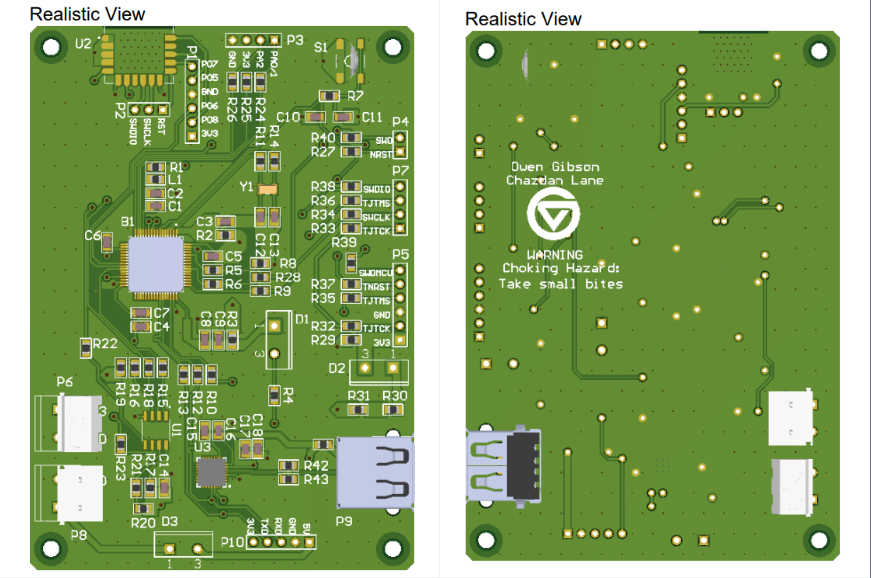

Projects
[ IDLE TPOT ] - A Twitter/X inspired Idle Game
Created in 1 weekend with the help of GPTo1. Written in HTML and Javascript.
Experience the world of TPOT (This Part of Twitter), where Technojargon is Currency and Aura is Law.
Will you become a Cracked 10x Engineer?
View Project on GitHub
GIBCPU - 8-Bit Custom CPU Design
Emulated in C, includes Assembler that translates custom Assembly language into bytecode.
Features 256 bytes of RAM, 4 registers, 15 custom instructions, and internal modules work asynchronously.
Implemented Conway’s Game of Life in available memory.
View Project on GitHub
Senior Project - Inverted Pendulum / DOOM Arcade Machine

Demonstration of seL4 Hypervisor running an Inverted Pendulum and DOOM seamlessly in separate Operating Systems.
Project run on Xilinx Ultra96v2 FPGA, using custom PCB for driving pendulum motors and reading encoders.
Included a comically large red button that restarted DOOM OS to demonstrate uninterrupted pendulum movement.
Bedside Sleep Apnea Recording Device

Created a volume-triggered audio recorder using the STM32 Microcontroller Platform on custom PCB.
Utilized 32kb Flash memory chip to record audio data, with a fully custom code library for read/writes using SPI.
Fully controllable via Bluetooth console communication to manage audio entries and activate data transfer.
Developed toolchain that captured data from COM port and saved to file, then converted the data to MP3.